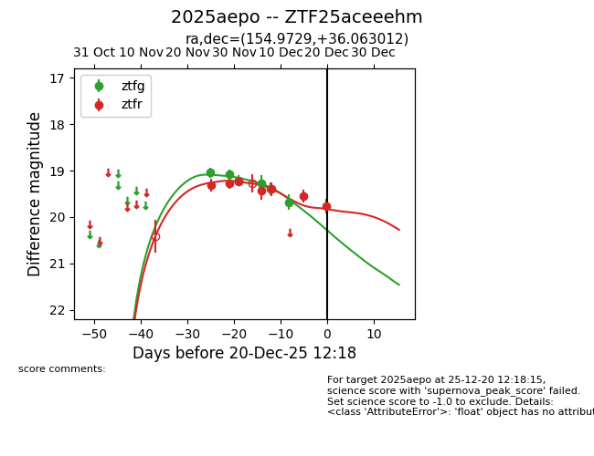
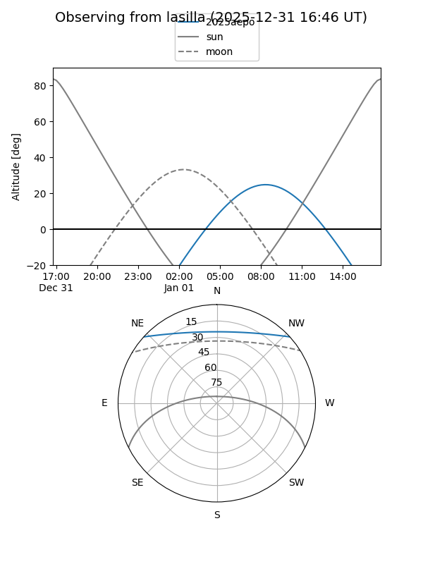
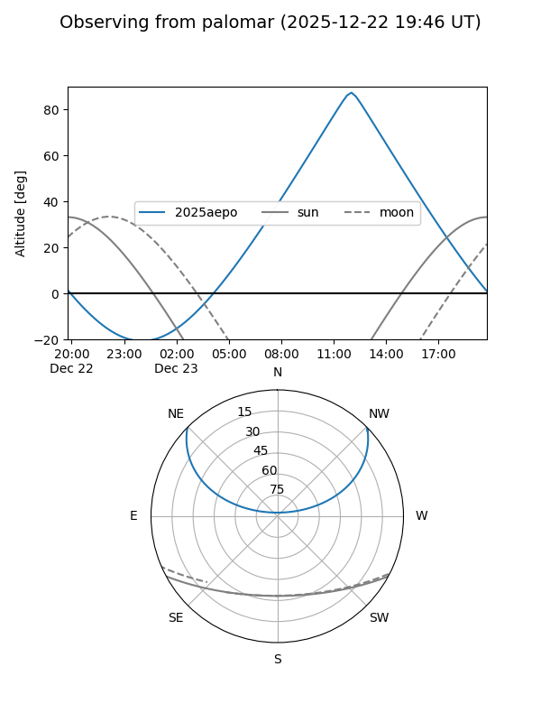
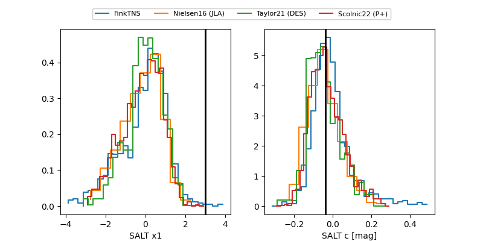

2025aepo
Target 2025aepo at 2025-12-22 14:03
Aliases and brokers:
FINK: fink-portal.org/ZTF25aceeehm
Lasair: lasair-ztf.lsst.ac.uk/objects/ZTF25aceeehm
ALeRCE: alerce.online/object/ZTF25aceeehm
TNS: wis-tns.org/object/2025aepo
YSE: ziggy.ucolick.org/yse/transient_detail/2025aepo
alt names
ZTF25aceeehm (ztf,fink_ztf)
2025aepo (tns,yse)
Coordinates:
equatorial (ra, dec) = 154.9729,+36.06301
equatorial (HMS+DMS) = 10:19:53.49,+36:03:46.84
galactic (l, b) = (187.7883,+56.74392)
Flags:
Photometry:
last ztfg=20.27, ztfr=19.77
7 ztfg, 7 ztfr detections
Lightcurve

Visibility


Additional plots
